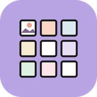

PlainGrid privacy policy
This policy covers the PlainGrid Android app (“PlainGrid”), a feed planner and photo grid preview. In short: PlainGrid does not collect, sell or share any data. It has no login, no account, no ads, no analytics and no tracking. The app does not have permission to use the internet, and it does not connect to any social network.
Information the app handles
- Photos you pick to plan. The app copies each one into its own private storage, along with any crops you make.
- What you type: feed names, usernames, bios, captions, hashtag sets, planned dates and post states.
- Pictures and backup files you save or share, and your settings.
All of this stays on your phone, in the app's private storage. None of it is ever sent to the developer or anyone else.
Photos
Photos are picked with Android's system photo picker, so PlainGrid only ever sees the photos you choose. It has no access to the rest of your gallery.
Reminders
If you give a post a date and leave “Remind me” on, PlainGrid asks Android for permission to show notifications, and schedules a reminder on your phone. Reminders are made and shown on the phone only. PlainGrid also re-schedules them after the phone restarts.
Export, backup and sharing
When you save a grid picture or a backup, Android's own file screen lets you choose where the file goes, and the share sheet sends a photo or picture to the app you pick. Backup files contain your feeds, photos and captions; keep them somewhere you trust. Nothing leaves your phone unless you do this yourself.
Permissions
PlainGrid asks only for notifications (for reminders, optional) and to run at start-up so reminders survive a restart. It has no internet, location, contacts, camera, microphone or storage access.
Purchases
PlainGrid has no in-app purchases and no subscriptions.
Storage and deletion
You can delete posts and feeds in the app at any time. Uninstalling the app removes all its data (files you saved or backed up stay where you put them). Since we never receive your data, there is nothing for us to delete on our side.
What we don't do
- We don't collect personal or sensitive information.
- We don't sell or transfer user data to third parties.
- We don't show ads or use advertising IDs.
- We don't use analytics or crash-reporting services.
Children
The app is not directed at children under 13 and does not knowingly collect information from anyone.
Independent app
PlainGrid is not affiliated with, endorsed by or connected to Instagram or Meta.
Changes
If this policy changes, the updated version will be posted on this page with a new date.
Contact
Questions or requests: open an issue on GitHub.